1Mở trang, xem lần đồng bộ
Vào BVI Điều hành, mở menu Vùng, khách hàng › Vùng FarmBase. Chỉ owner và quản lý thấy trang này.
- Dòng Đồng bộ gần nhất cho biết dữ liệu lấy từ FarmBase lúc nào. Dữ liệu tự đồng bộ định kỳ.
- Bấm Tải lại để lấy bản mới nhất. Bấm Hướng dẫn để mở trang này.
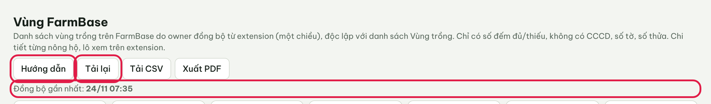
2Xem nhanh bằng các ô số
Mỗi ô là số vùng còn thiếu một mục. Số đỏ là còn thiếu. Số trong ngoặc là tổng số hộ hoặc lô thiếu.
- Bấm vào một ô để chỉ hiện các vùng thiếu mục đó. Bấm lần nữa để bỏ lọc.
- Mở Chi tiết 12 mục hồ sơ vùng để thấy từng mục: ảnh flycam, ảnh bảng tên, ảnh kho thuốc, CCCD doanh nghiệp…
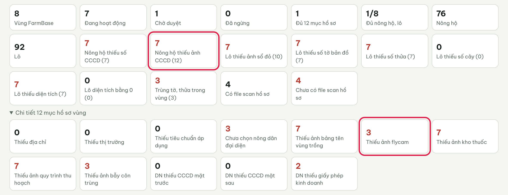
3Lọc theo "Thiếu gì"
Hàng bộ lọc gồm: ô tìm (tên, mã, tổ chức, xã), trạng thái, tổ chức, hồ sơ 12 mục, nông hộ và lô.
- Ô cuối cùng Thiếu gì: chọn một mục, ví dụ "Thiếu ảnh flycam" hoặc "Lô thiếu ảnh sổ đỏ". Số trong ngoặc là số vùng thiếu.
- Bấm Bỏ lọc để xem lại tất cả.
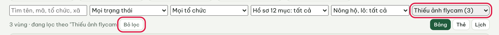
4Đọc bảng danh sách vùng
Có 3 cách xem: Bảng (đủ cột), Thẻ (gọn, hợp điện thoại), Lịch (bước tiếp theo). Vùng thiếu nhiều nhất nằm trên cùng.
- Cột Thiếu: số hộ, số lô, diện tích và các nhãn còn thiếu. Ví dụ "NH: số CCCD 1" là 1 nông hộ thiếu số CCCD.
- Kéo ngang để xem thêm cột: bước tiếp theo, thu hoạch, ghi chú, từng mục hồ sơ. Hàng tiêu đề luôn ghim trên cùng khi cuộn xuống.
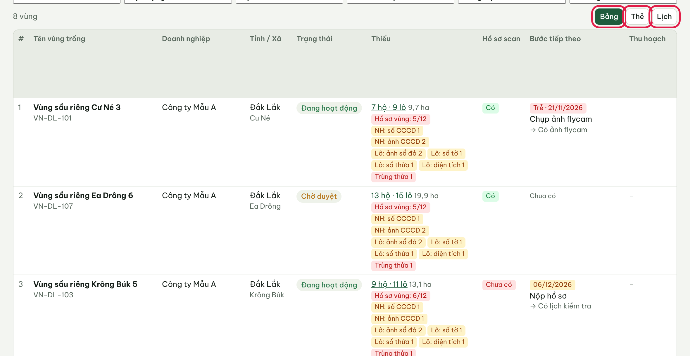
5Cột Hồ sơ scan
Có: thư viện vùng trên FarmBase đã có file tên chứa scan_hoso (bản hồ sơ đã có chữ ký dân và doanh nghiệp). Chưa có: cần scan bản đã ký.
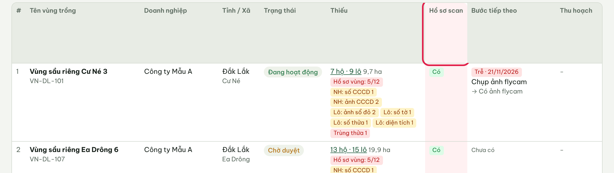
6Xem chi tiết: ai thiếu, lô nào
Bấm vào ô ở cột Thiếu (hoặc nút Xem chi tiết ở dạng Thẻ). Khung bên phải mở ra:
- Nông hộ còn thiếu: tên hộ, thiếu số CCCD, ảnh CCCD mặt trước hay mặt sau.
- Lô trùng tờ, thửa: các lô khai trùng số tờ và số thửa trong cùng vùng.
- Lô còn thiếu: mã lô, của hộ nào, thiếu ảnh sổ đỏ, số tờ, số thửa, số cây hay diện tích.
- Hồ sơ vùng (12 mục) và Bước tiếp theo ở cuối.
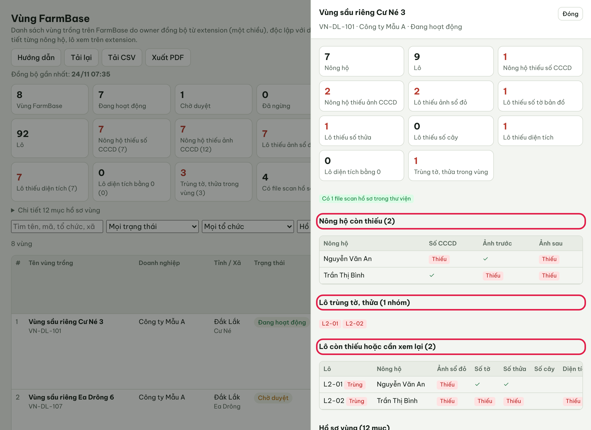
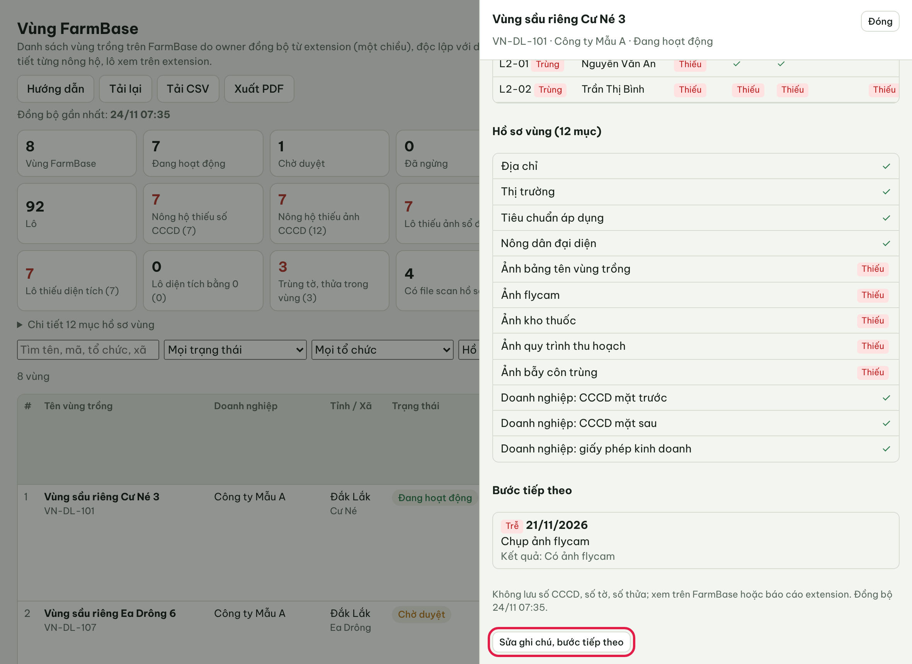
7Bổ sung trên FarmBase
Trang này chỉ để xem, không sửa dữ liệu trên FarmBase. Để hết thiếu:
- Vào admin.farmbase.vn, mở đúng vùng, nông hộ hoặc lô như trong bảng chi tiết.
- Bổ sung ảnh, số liệu còn thiếu rồi lưu.
- Sau lần đồng bộ kế tiếp, nhãn thiếu trên trang này tự mất.
8Ghi chú và bước tiếp theo
Bấm Sửa ở cột Ghi chú (hoặc nút "Sửa ghi chú, bước tiếp theo" trong chi tiết).
- Điền ngày thu hoạch, ngày kết thúc vụ, ghi chú tình trạng hồ sơ.
- Bấm + Thêm bước, điền ngày, làm gì, kết quả cần đạt. Có thể thêm nhiều bước.
- Bấm Lưu. Làm xong bước nào thì tick Xong. Bước quá ngày mà chưa xong hiện nhãn đỏ Trễ.
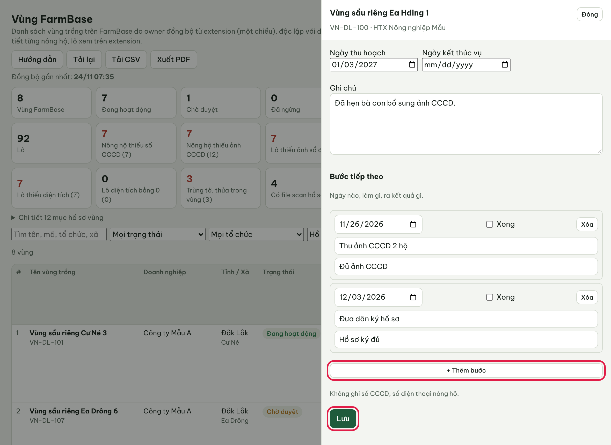
9Xem lịch bước tiếp theo
Bấm Lịch để thấy các bước của mọi vùng theo tháng. Đầu trang gom các bước trễ hạn và bước chưa có ngày. Bấm vào một bước để sửa ngay. Dùng nút ‹ › để đổi tháng, "Hôm nay" để quay về.
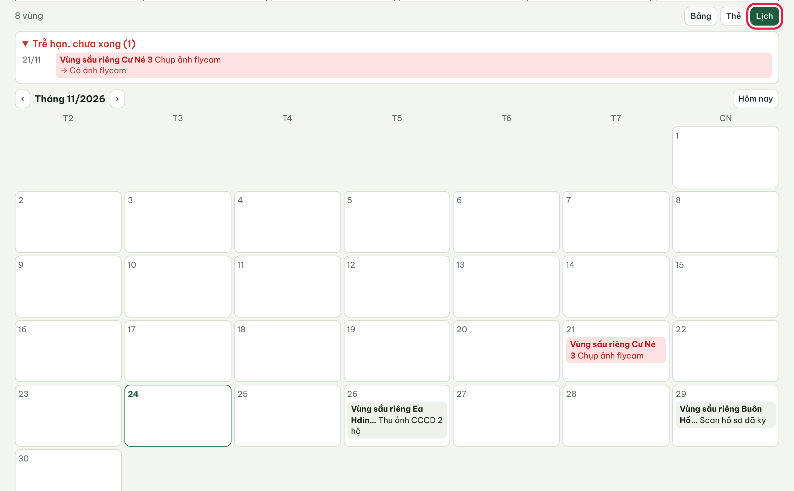
10Dùng trên điện thoại
Trên điện thoại trang tự chuyển sang dạng Thẻ: mỗi vùng một thẻ, có nhãn thiếu, hồ sơ scan, bước tiếp theo và nút Sửa. Lịch trên điện thoại hiện theo ngày.
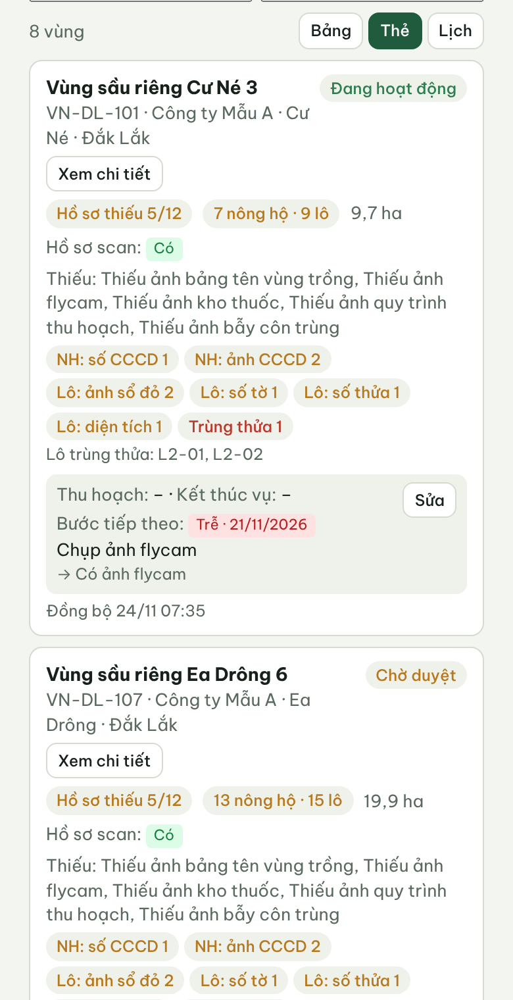
11Xuất PDF, tải CSV
- Lọc trước (ví dụ một tổ chức, hoặc "Thiếu ảnh flycam"), rồi bấm Xuất PDF. Hộp in mở ra, chọn máy in Lưu thành PDF (Save as PDF).
- File PDF có 2 phần: Tổng quan (mỗi mục thiếu, bao nhiêu vùng, tên vùng) và Chi tiết từng vùng. Không có số CCCD, số tờ, số thửa.
- Tải CSV tải danh sách đang lọc để mở bằng Excel.
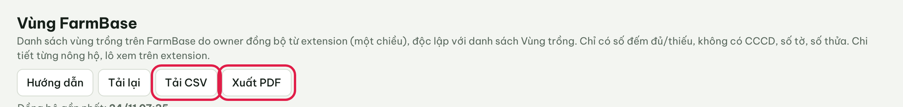
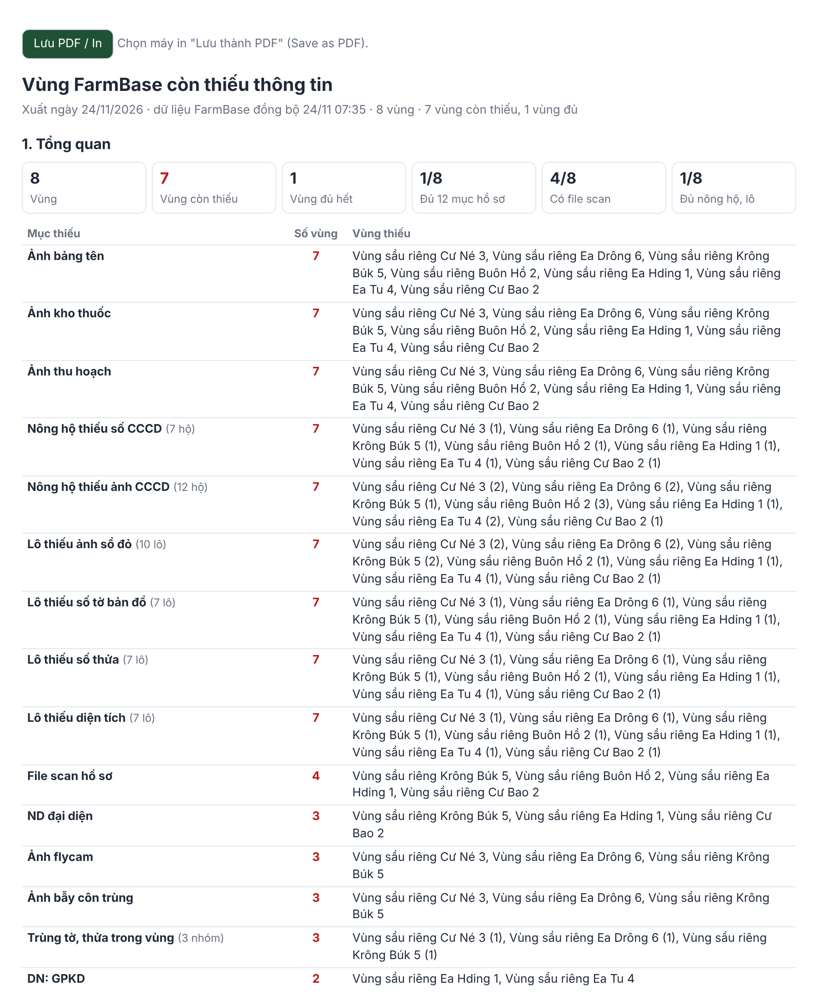